Claim System
DURATION
Sep 2023 to Feb 2024
MY ROLE
Product Manager
TEAM STRUCTURE
Software, After-Sales and External Front-End Vendor
PRODUCT STATUS
Launched, iteration ongoing
PLATFORM
Web
TOOLS
Notion / Jira / Miro / Figma
KEY RESULTS
-
Delivered the product within a 4 month timeframe , meeting the project’s tight deadlines and resource constraints.
-
Managed the budget for outsourced development, remained within scope .
-
Enhance the purchase process, increase the payment success rate from 63% to 92% .
-
Enhance the user experience, reduce product claim and purchase communication time from 2 weeks to 2 days .
Product Background
Claim System is an after-sales service platform designed for Hyena’s e-bike system. It supports e-bike dealers in submitting warranty claims and ordering parts with ease, while also providing Hyena’s service team with an efficient way to manage and track orders.
We faced tight deadlines and limited resources when I took over this project. Within just four months, I was tasked with leading the product to launch while ensuring it met both user needs and business objectives.
Problems & Challenges
4.
User Testing and Report:
Conducted thorough product testing reports.
1. Collaborating with an External Front-End Vendor
📌 Problem:
Working with an outsourced development team created communication challenges and risks of misalignment on requirements and goals.
🧭 What I Did?
I defined detailed product requirements (PRD) and implemented regular meetings and asynchronous communication (via Teams, Jira and Notion) to ensure both sides stayed aligned through each development phase.
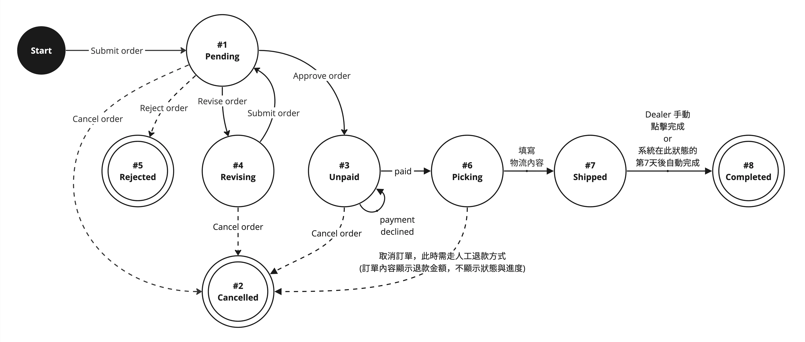
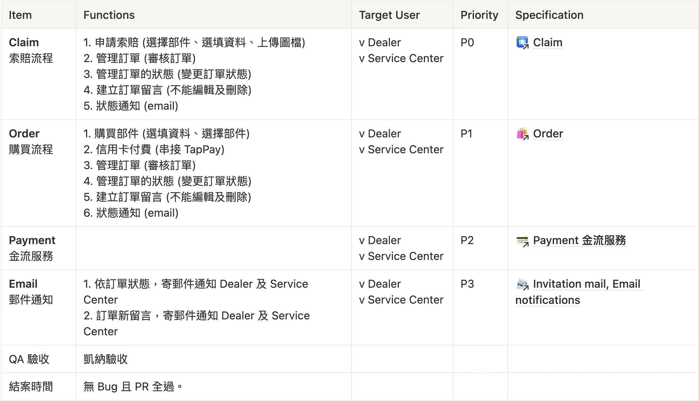
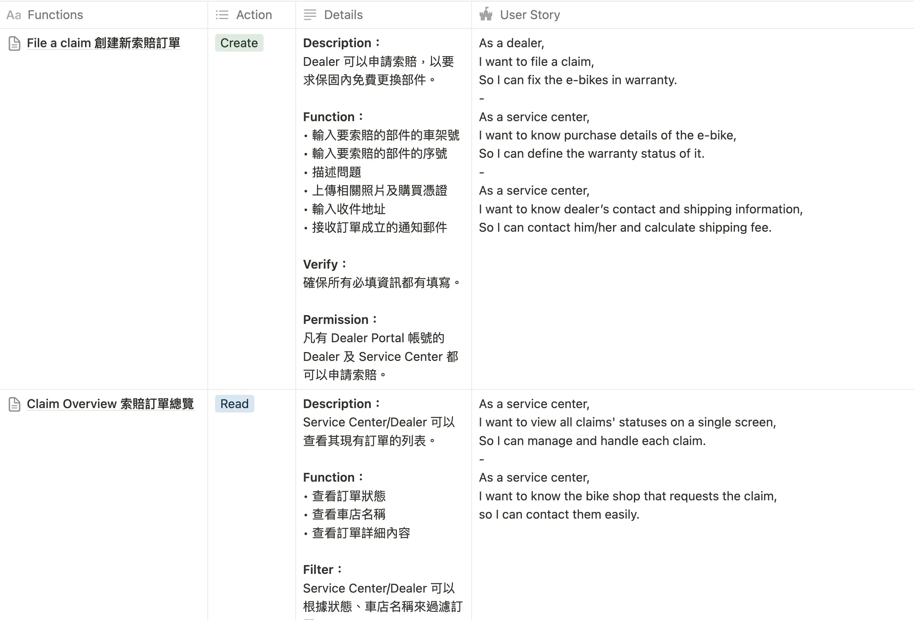
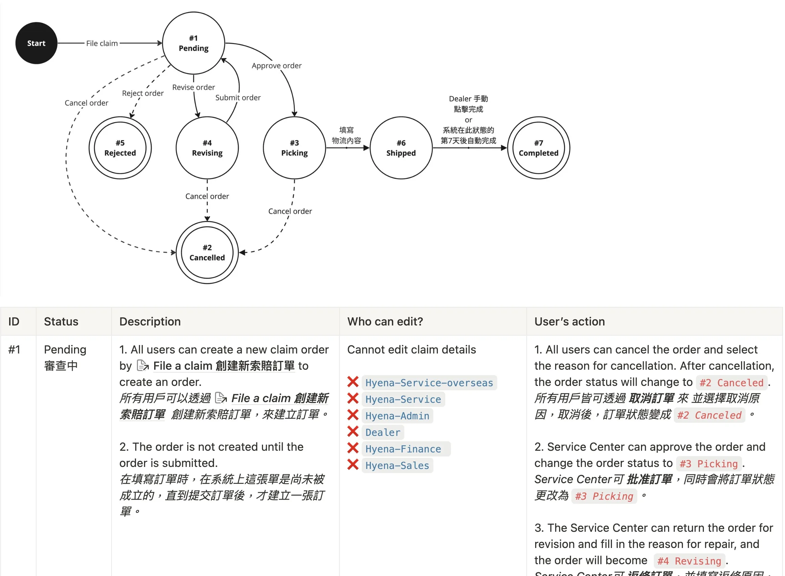
2. Ensuring Product Quality with Limited Resources
📌 Problem:
Balancing speed, budget, and quality under tight time (in 4 months) and resource constraints was a key challenge.
🧭 What I Did?
I prioritized critical features, introduced rigorous testing at every stage, and utilized automated testing tools to maintain product standards while keeping development efficient.
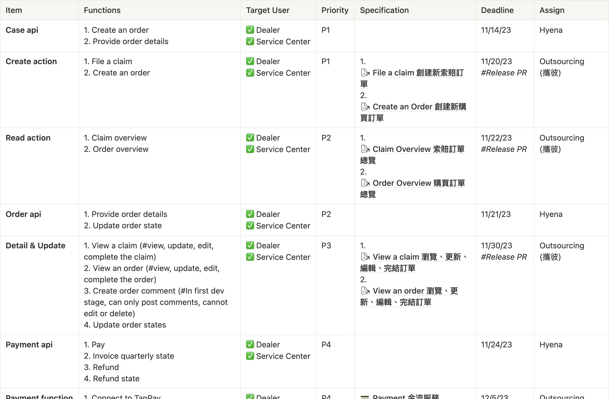
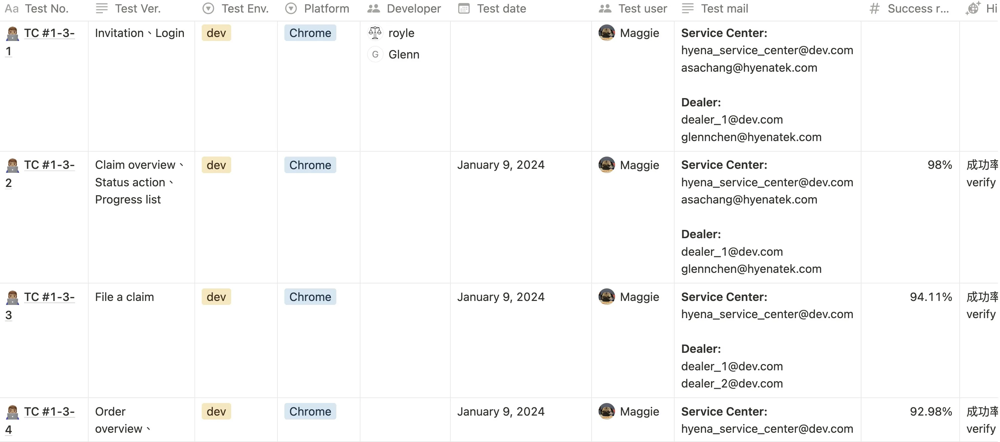
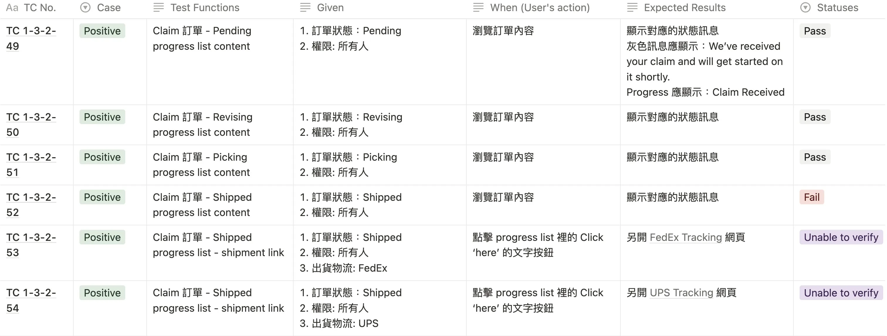
3. User Testing and QA Resource Limitations
📌 Problem:
As we approached the QA phase, the project faced a shortage of QA resources, raising concerns about potential delays and increased back-and-forth if too many bugs were discovered late. There was also a risk that insufficient pre-QA checks would impact product quality and the release timeline.
🧭 What I Did?
Before handing the product off to the QA team, I personally conducted thorough user testing and created detailed testing reports in Notion to catch and resolve issues in advance. This proactive approach significantly reduced the risk of critical bugs during QA.
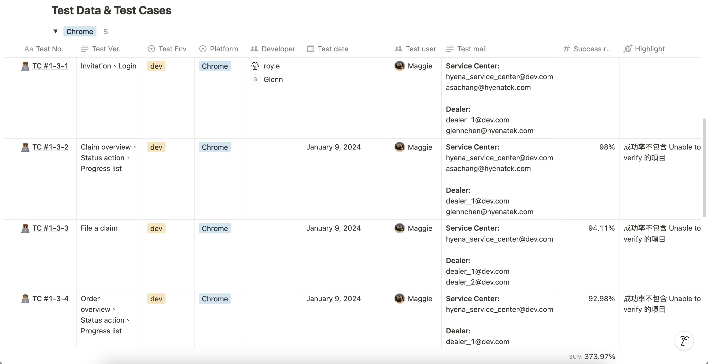
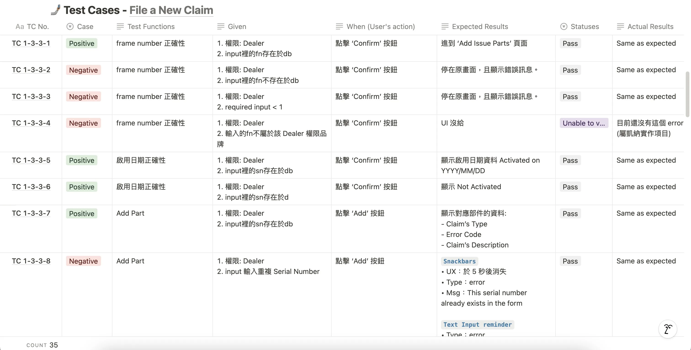
Furthermore, to support the limited QA team, I also took on an active role during the formal QA process. I used Testmo to run and log additional test cases, working side-by-side with QA to ensure smooth verification and faster approval, ultimately speeding up the release cycle.
Key Results
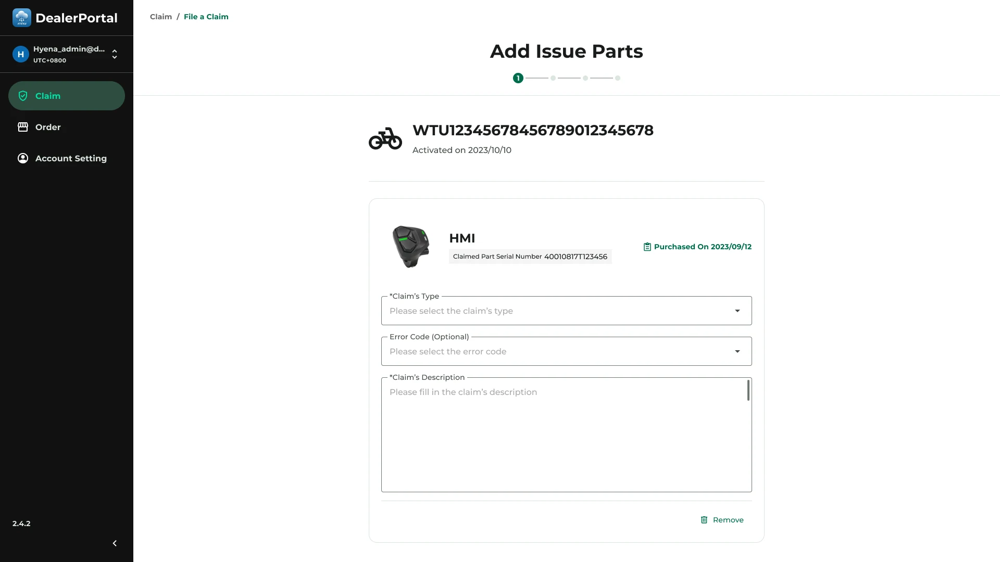
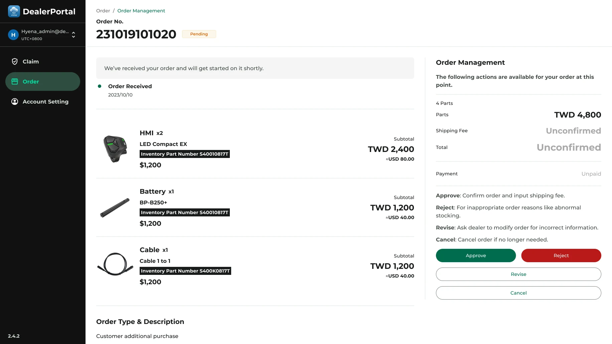
1. On-time Delivery:
Launched the product within 4 months, meeting project timelines and constraints.
2. Budget Control:
Managed external vendor costs to ensure project stayed within budget.
3. Increased Payment Success Rate:
Optimized the purchase process, increasing payment success from 63% to 92%.
4. Reduced Communication Time:
Cut order communication time from 2 weeks to 2 days, improving user satisfaction and efficiency.
My Contributions
1. Product Definition & Architecture:
Established clear product goals, logical structures, and functional specifications to guide development.
2. Feature Prioritization:
Defined and maintained a feature roadmap based on business objectives and user needs.
3. User Testing & Feedback:
Conducted thorough product testing and collected feedback for continuous improvement.
4. Vendor Management:
Coordinated closely with the external front-end team to ensure project progress and quality standards were met.
What I Learned?
1. Effective Communication with External Teams:
Clear documentation and frequent communication are critical for outsourced development.
2. Maintaining Quality Under Constraints:
Focusing on core features and leveraging automated tools helped maintain product quality on a tight timeline.
3. Cross-Department Collaboration:
Close collaboration with after-sales teams ensured the product solved real user pain points and business challenges.